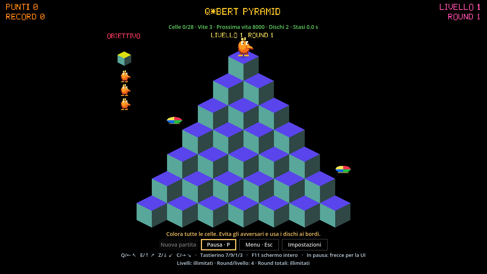

Tastiera + browser desktop · Sala Giochi sul WEB “80 ARCADE GAMES”
Q*BERT PYRAMID

PRIMA DI PREMERE START
01 / SCEGLI LA DIREZIONE
↖ Q Sinistra · KP7
↗ E Su · KP9
↙ Z Giù · KP1
↘ C Destra · KP3
02 / PRENDITI UNA PAUSA
P mette in pausa e riprende. Se cambi finestra, torna nel gioco, riprendi esplicitamente e premi di nuovo i tasti.
03 / LASCIA IL TUO SEGNO
Colora la piramide, evita gli avversari e usa i dischi. Tre iniziali per entrare nella classifica condivisa sul server.
COMANDI, AUDIO E CLASSIFICA ＋
↖ Q / Sinistra / tastierino 7; ↗ E / Su / 9; ↙ Z / Giù / 1; ↘ C / Destra / 3. P: pausa e ripresa. Esc: menu secondo il flusso risultati. F11: schermo intero se consentito dal browser. Menu: frecce, Tab / Shift+Tab, Enter o Spazio e mouse. Record: tre iniziali A–Z, Backspace per correggere, Tab/Enter per confermare. Le impostazioni permettono tasti aggiuntivi.
Punteggi confermati e classifica sono salvati sul server e condivisi fra i browser; si aggiornano automaticamente. Per registrare un risultato servono tre iniziali e la conferma del server: in caso di errore usa Riprova. Soltanto le impostazioni rimangono nel browser tramite IndexedDB e possono perdersi se i dati del sito vengono rimossi. Non viene salvata una partita in corso e non c’è sincronizzazione con Windows. Esc può prima uscire dallo schermo intero; F11 può essere gestito dal browser. Android, smartphone e touch non sono supportati.